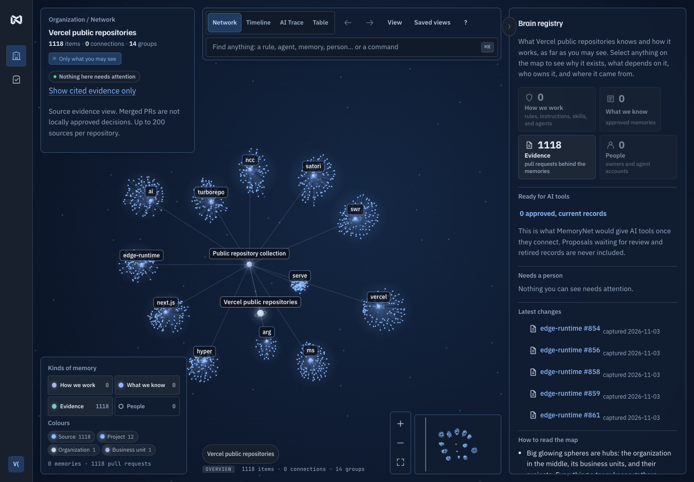

Original pull request
vercel/next.js #101008
turbo-tasks: add cancelable cell reads via Vc::lazy_reader()
Read the original PROpen source · Apache 2.0 · Local-first
MemoryNet helps stop AI coding agents from building on decisions your team already reversed. Give them approved context and catch the work pinned to old guidance.

Screenshot of the configured Vercel prototype. A fresh trial starts with its own data.
Capture evidence, approve exact guidance, and pin active work to that version. Revalidation flags changed decisions and refuses stale context exports. Code behavior still needs repository tests.

vercel/next.js #101008
turbo-tasks: add cancelable cell reads via Vc::lazy_reader()
Read the original PROriginal merge commit
61e1348fb523
Candidate remains pending
Imported text becomes guidance only after explicit review of the exact revision.
Inspect the review queueOriginal public source. Upstream merge does not imply local approval.
MCP delivers reviewed guidance for the task and files being changed. Agents can propose decisions and report stale guidance; people approve every published version.
Connect a coding agent{
"name": "get_task_context",
"arguments": {
"task": "Update the retry policy",
"paths": ["src/api/retry.ts"],
"maxTokens": 2000
}
}Context includes reasons, citations, and version receipts. Agents cannot approve.
A local pilot for public
and synthetic evidence.
A configured local workspace opens as one operator; a clean checkout provides test personas. Existing GitHub or access-key login gates stay enabled, and GitHub sign-in can verify linked accounts. The app remains a local prototype for public or synthetic evidence.
Imported PRs are evidence. Scoped guidance requires explicit applicability and exact-revision approval. Pending and legacy unscoped records are excluded from scoped agent context.
Real-team benefit remains unproven. Automatic notifications, persistent task-bound delivery, and verified CI integration remain outside the current workflow.
Read the remaining workThe lifecycle demo verifies stale-context blocking. Earlier coding observations do not establish a benefit over maintained instructions.
Historical observations reviewed November 3, 2026; no percentage improvement or production effectiveness is claimed. Read the observation summary · Inspect the executed lifecycle replay.
From a source checkout, run the decision-change walkthrough, then connect your public repository and coding agent.
Read the setup guidenpm ci --ignore-scripts
npm run demoOpen .local/decision-demo/index.html. Scripted extraction and fixture approvals; real MCP and stale-export checks. No key or account required.